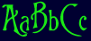

If you have windows and a browser that supports all your windows fonts, then you may want to check
out this true type font. I use this font on many of my pages.

Font Set: Burton's Nightmare
File Name: nitemare.ttf
Download file name:nitemare.zip
Download size:16,728 bytes
Ok, the cool colors around here were made with a program that I
have been working on with my brother for some time now. It's finally
in Beta stage of developement... almost ready for the public!
When it is finnished, I will post the link to the page that you
can get it at.
here is a picture of the alpha version.

it looks like it will be about a megabyte in size for downlaod as a stand alone program. I'll keep you posted!!!
Examples:
Warp -
Moten HTML [Cool Color Writer] demo
Fade -
Moten HTML [Cool Color Writer] demo